enrico könig
suite 250, 975 vernon drive
vancouver, BC, V6A 3P2
cell 604.805.7205enricokonig@gmail.com
Process
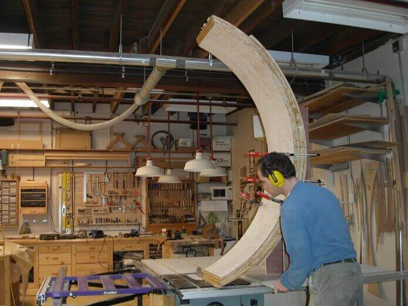
The curved shape needs to be cut to size and profiled. To cut it to length on the table saw requires a specially constructed jig for each new shape.
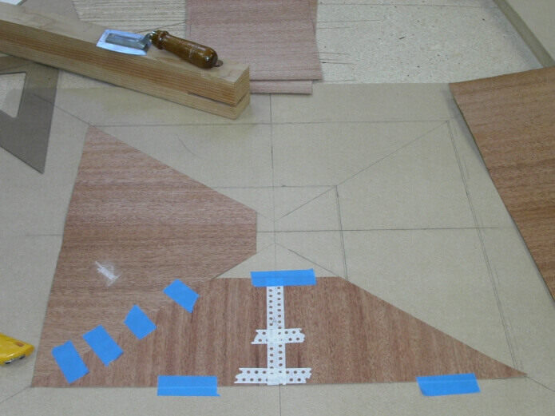
Fitting tabletop veneer pieces to pattern.
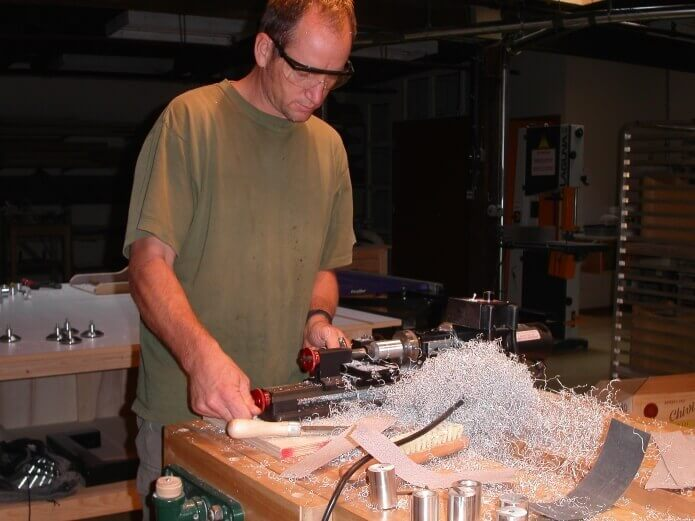
Shaping metal legs.
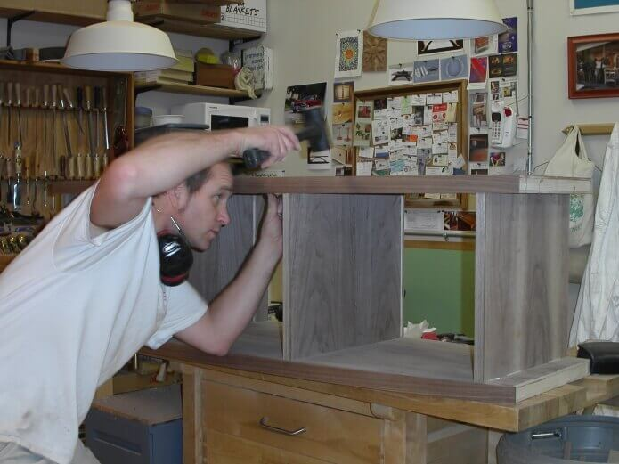
Starting to put it all together.
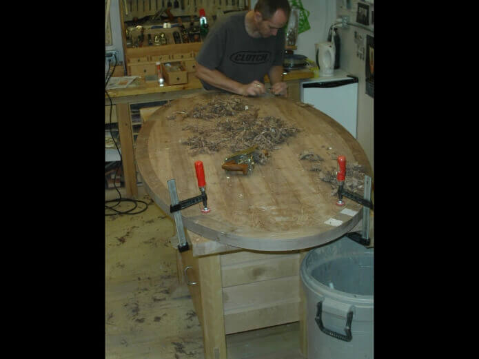
Large solid wood shapes often require a lot of hand tool work. This pedestal base for a dining table is being shaped and smoothed with hand planes.
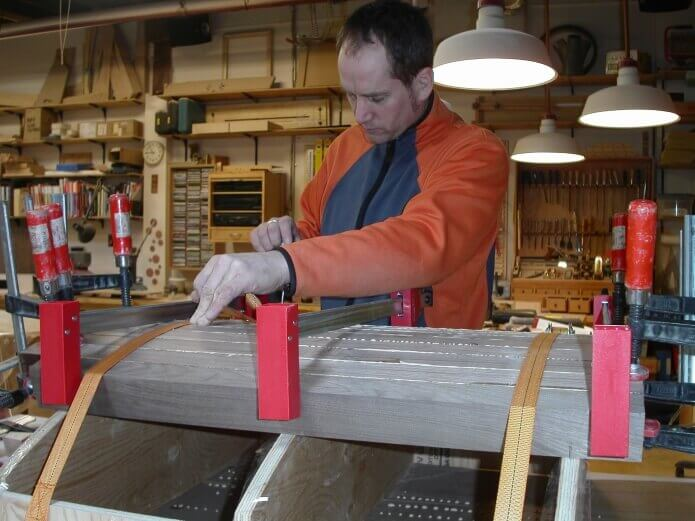
Large curved pieces in solid wood are made by gluing staves together. Each edge is precisely angled so that, when glued, it forms a curved shape. This is called coopering. This is the way wooden barrels are made, and the way the ends were made for the bowed-front media cabinets.
The last step is finishing. I spray all of the furniture myself in the shop's paint booth.
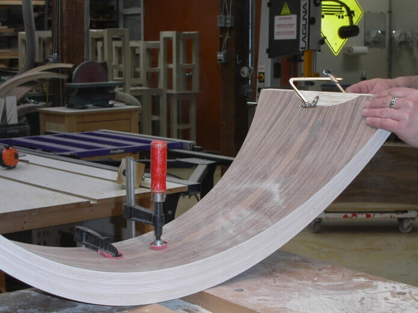
Further refining an end scoop.
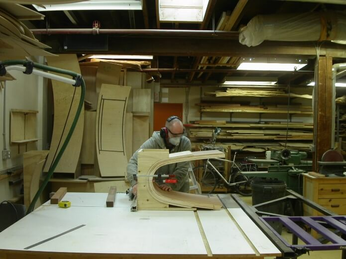
Cutting an arch to height on a tablesaw using a specially made jig.
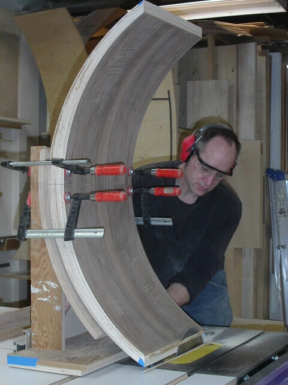
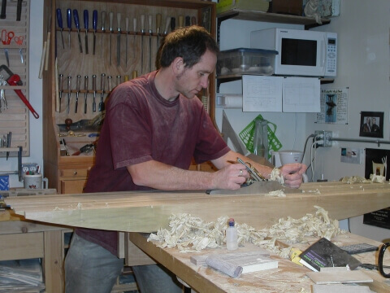
Large solid wood shapes often require a lot of hand tool work. The pedestal base for a dining table is being shaped and smoothed with hand planes.
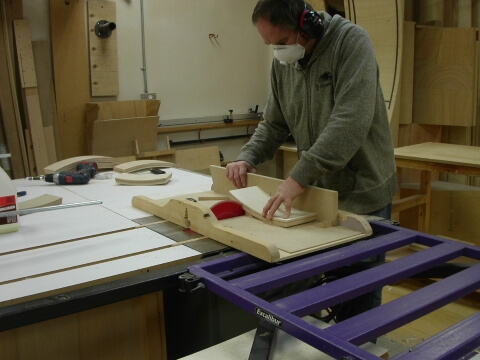
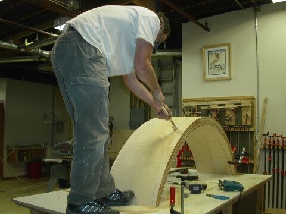
On the larger shapes, hand tools often need to be used as well. This dining table base is too thick for the jigsaw, so a Japanese hand saw is being used to cut its profile.
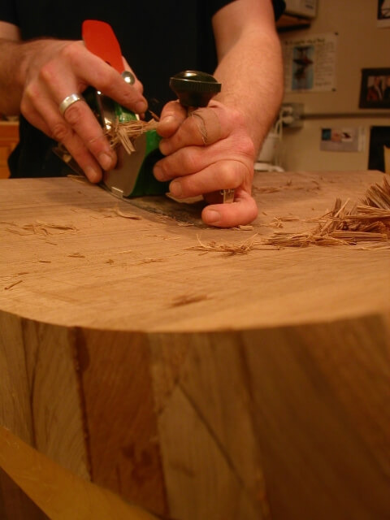
Coopered pieces need to have the flats shaped on both the inside and outside so that a smooth curved surface is achieved. In this case a compass plane is being used.
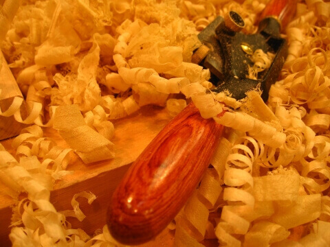
For more information on studio furniture, see the
Furniture Society
(http://www.furnituresociety.org/). Enrico has been a member of the Furniture Society since 2000.